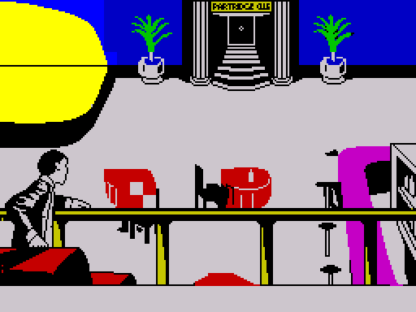
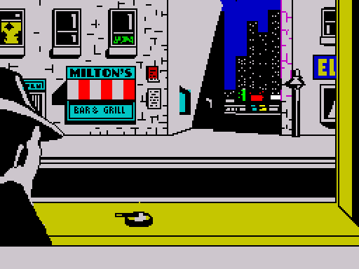
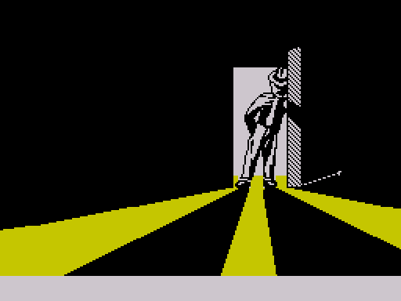
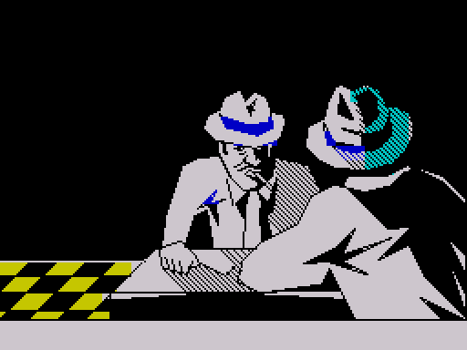
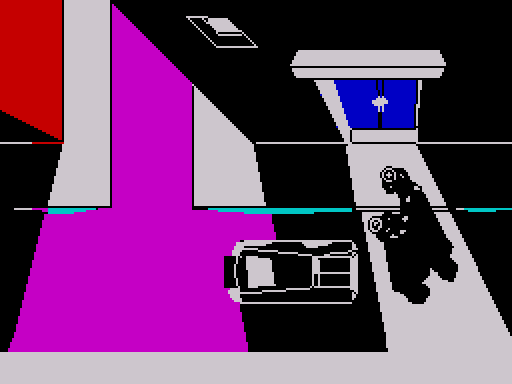
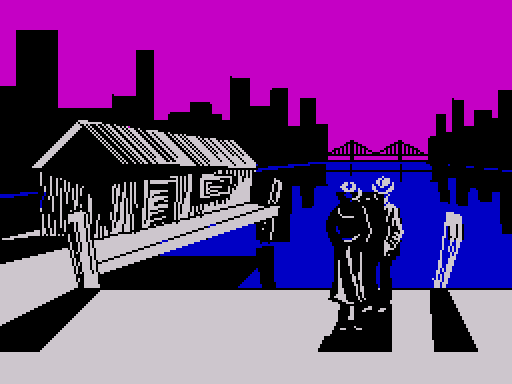
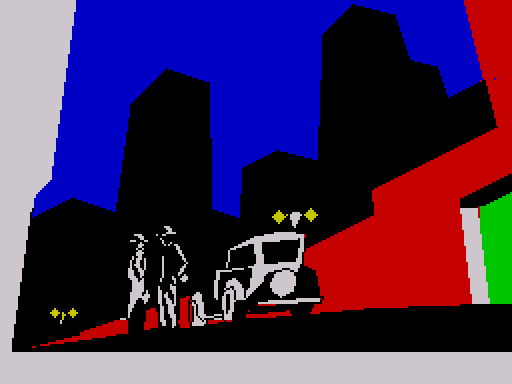
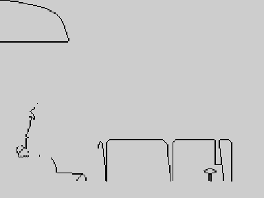
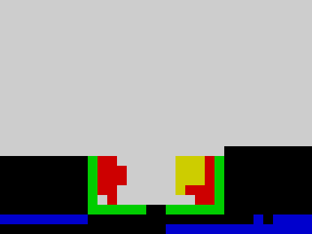
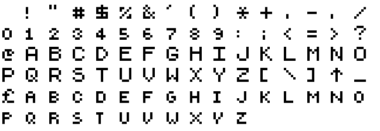

The pictures
Every picture in the game is stored as drawing commands, not as a bitmap. Two formats exist: the compressed format drawn by 32126 (the full-screen bar and street) and the command-list format drawn by 31247 (lines, flood fills, attribute paints and copied blocks). These images were produced by running the game's own routines in the Z80 simulator on a cleared screen; nothing was redrawn by hand.
| Picture | Address | Format |
|---|---|---|
 The Partridge Club (bar room) | 53793 | compressed |
 The street outside Milton's | 55692 | compressed |
 A man in a hat at a table | 57583 | command list |
 A figure in a doorway between headlights | 58673 | command list |
 Two hoods at a table | 59397 | command list |
 The getaway car from above | 60526 | command list |
 Two figures at the waterfront | 61625 | command list |
 Hoods and a car in the city | 63601 | command list |
 The close-up of a hood | 64646 | command list |
The shootout figures are plain 16×32 bitmaps, two bytes per row, listed by the frame tables at 42174-42237 (see the graphics block at 47082):
The two "A year goes by" animations (see 33994), recorded by running the game's own step routines in the Z80 simulator. In the bar room the customers and waiters blink and the hoods walk in, cross the club and leave; in the street a car drives past and bullet marks appear on the wall.


The restaurant shootout (42112), recorded by running the real routine in the Z80 simulator with a scripted player who shuffles about and keeps firing. The room, with its tables, chairs and the picture on the wall, is the same in every game; the figures are the sprites shown above.

The game's own proportional font (characters 32-122, from 27087). Each glyph is six pixels high with a width byte, so the text in the speech bubbles is typeset a pixel at a time; there are no lower-case letters, because codes 97-122 are small capitals.
